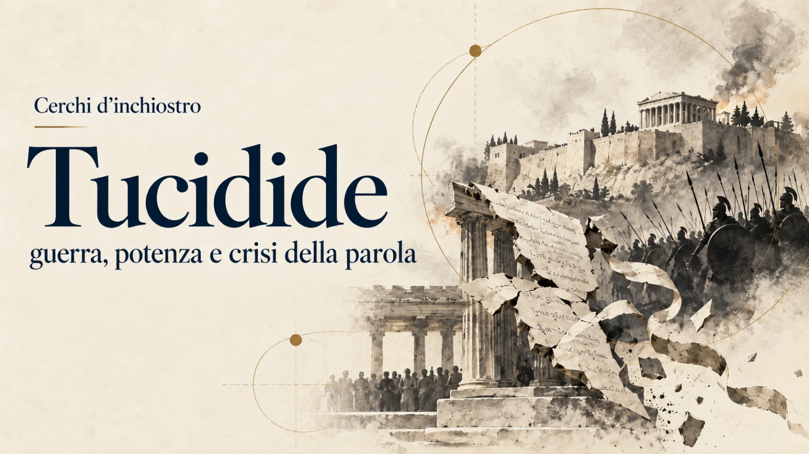

Guida 31 · Cerchi d’inchiostro
Tucidide: guerra, potenza e crisi della parola
La guerra mette alla prova le città e le parole con cui giudicano sé stesse.

Lo storico che vide il conflitto mettere alla prova le città e il linguaggio con cui giudicano sé stesse
Ci sono guerre che spostano confini, distruggono eserciti, cambiano alleanze. Altre penetrano più in profondità: modificano ciò che una comunità considera possibile, ragionevole, necessario.
Tucidide racconta una guerra di questo genere.
Mentre Atene e Sparta combattono per la potenza, il conflitto attraversa progressivamente la vita delle città. La paura modifica il calcolo politico. L’ambizione allarga il campo di ciò che appare legittimo desiderare. Gli interessi costruiti dall’espansione possono assumere il linguaggio della necessità. Nella guerra civile, perfino le parole con cui una comunità distingue il coraggio dall’imprudenza, la lealtà dalla fazione, la moderazione dalla debolezza cambiano valore.
La Guerra del Peloponneso ricostruisce il lungo conflitto iniziato nel 431 a.C. fra Atene, Sparta e i rispettivi sistemi di alleanze, concluso nel 404 con la sconfitta ateniese. Tucidide lo attraversò come cittadino, stratego, esule e storico. Intraprese il racconto fin dall’inizio della guerra, convinto della sua eccezionale importanza. Il testo conservato si interrompe nel 411, ma la sua interpretazione abbraccia il conflitto come un’unica guerra durata ventisette anni.
La singolarità del suo sguardo nasce dalla distanza che riesce a costruire dentro un’esperienza alla quale appartiene. Tucidide conosce la guerra dall’interno e tenta comunque di sottoporla a indagine. Sa che uomini e città devono decidere prima di conoscere gli esiti, con informazioni incomplete, interessi divergenti, passioni intense e discorsi capaci di rendere plausibile una scelta che gli eventi successivi potranno mostrare disastrosa.
Atene, Sparta, Mitilene, Corcira, Melo e la Sicilia diventano così molto più che luoghi di una storia militare. Sono situazioni nelle quali osservare che cosa accade alla politica quando potenza, paura, desiderio, linguaggio e necessità entrano nel giudizio.
La domanda che attraversa questa guida riguarda ancora ogni comunità esposta a un conflitto prolungato:
quanto può cambiare il significato delle nostre parole prima che ci accorgiamo che è cambiato anche il nostro modo di giudicare?
Tucidide in breve
Tucidide è lo storico e stratego ateniese del V secolo a.C. che raccontò la guerra combattuta fra Atene, Sparta e i rispettivi sistemi di alleanze dal 431 al 404 a.C.
Nasce probabilmente intorno alla metà del V secolo a.C.; la data esatta rimane incerta. È figlio di Oloro e appartiene a un ambiente abbastanza ricco e influente da possedere interessi minerari e relazioni nell’area della Tracia.
Nel 424 a.C. ricopre la carica di stratego. Durante l’offensiva dello spartano Brasida non riesce a impedire la caduta di Anfipoli, anche se conserva il vicino porto di Eione. Nel libro V afferma che, dopo il comando di Anfipoli, visse vent’anni in esilio.
Quella distanza diventa importante per il suo lavoro. Tucidide stesso collega gli anni lontani da Atene alla possibilità di conoscere meglio anche il campo peloponnesiaco e di seguire gli avvenimenti con maggiore disponibilità di tempo.
La sua unica grande opera conservata è la storia della guerra fra Ateniesi e Peloponnesiaci. Il testo rimane incompiuto. Nelle sue pagine convivono storia militare, politica e diplomatica, analisi delle istituzioni, discorsi, psicologia collettiva, epidemia, guerra civile, impero e decisione.
La tradizione moderna ha spesso collocato Tucidide fra gli antenati del realismo politico. È una parte importante della sua eredità, ma l’opera contiene molto di più. Tucidide studia la potenza insieme al modo in cui le città la percepiscono; osserva come deliberano, come definiscono i propri interessi, come trasformano scelte storiche in necessità e come il conflitto possa raggiungere perfino il linguaggio attraverso cui una comunità giudica sé stessa.
È precisamente questa ampiezza a renderlo ancora difficile da ridurre a una formula.
Perché Tucidide conta
La guerra obbliga una comunità a stabilire priorità che in condizioni ordinarie possono rimanere parzialmente nascoste.
Libertà, sicurezza, giustizia, prestigio, legge, interesse e prudenza possono convivere finché le loro tensioni non richiedono una scelta. Quando la paura cresce, le risorse si riducono e il costo delle decisioni aumenta, occorre decidere quale rischio accettare, quale principio difendere e quale bene sacrificare.
Tucidide osserva questa trasformazione lungo l’intero conflitto.
La potenza conta perché le città devono misurarsi con ciò che possono realmente fare. La paura entra nella politica perché l’anticipazione di un pericolo modifica il comportamento prima ancora che quel pericolo si realizzi. Il discorso diventa parte dell’azione perché ogni decisione collettiva richiede una descrizione della situazione, dei costi e delle alternative. La guerra civile mostra poi che il conflitto può attraversare la società fino a modificare il prestigio delle virtù e il significato delle parole.
A tutto questo si aggiunge il problema dell’errore. Una città può conoscere le proprie risorse con una certa precisione e comprendere molto meno bene ciò che quelle risorse autorizzano a desiderare.
Nella Guerra del Peloponneso, la storia diventa perciò anche un’indagine sulle condizioni del giudizio politico.
Il problema umano: giudicare sotto pressione
Una parte decisiva della politica avviene prima che i fatti abbiano mostrato completamente il loro significato.
Occorre stabilire se un avversario costituisca davvero una minaccia, se un rischio futuro giustifichi una guerra presente, se una vittoria possibile valga il prezzo necessario per ottenerla. Bisogna capire se un alleato resterà affidabile, se una concessione proteggerà la pace o incoraggerà nuove pretese, se la cautela esprima misura oppure paura.
I protagonisti di Tucidide decidono dentro questa zona di conoscenza incompleta.
Il lettore occupa invece una posizione diversa. Conosce l’esito di molte decisioni mentre ascolta gli argomenti che le hanno rese plausibili.
Pericle difende una strategia prima che la peste trasformi radicalmente le condizioni di Atene. Cleone e Diodoto discutono il destino di Mitilene dopo che l’assemblea ha già preso una decisione estrema. Nicia cerca di frenare la spedizione siciliana prima che se ne conoscano le conseguenze. Gli Ateniesi discutono con i Melii quando la potenza imperiale sembra ancora capace di imporre quasi ovunque la propria volontà.
Tucidide dispone continuamente decisione ed esito su due piani differenti.
Il lettore può così osservare ciò che i protagonisti non potevano ancora sapere e, nello stesso tempo, misurare la qualità delle ragioni disponibili nel momento in cui dovettero scegliere.
La storia diventa un esercizio del giudizio proprio perché il senno di poi non basta a spiegarla.
Vita essenziale
Di Tucidide sappiamo meno di quanto la sua fama potrebbe far pensare. Una parte delle testimonianze biografiche proviene da epoche successive e richiede cautela; le informazioni più solide si trovano nella sua stessa opera.
Si presenta come Ateniese e figlio di Oloro. Durante la grande epidemia che colpisce Atene contrae personalmente la malattia e sopravvive. Nel 424 a.C. è stratego nell’area della Tracia, dove dispone di interessi economici e relazioni significative.
Brasida, impegnato nell’offensiva spartana contro Anfipoli, conosce l’influenza di Tucidide nella regione e accelera la propria azione prima che lo stratego ateniese possa intervenire efficacemente. Tucidide raggiunge l’area troppo tardi per salvare Anfipoli, ma conserva Eione.
Nel libro V afferma che, dopo quell’incarico, trascorse vent’anni in esilio.
La sua vicenda personale lo pone quindi in una posizione insolita. Combatte per Atene, sperimenta direttamente la responsabilità del comando e osserva poi il conflitto da una distanza che gli permette di entrare in contatto anche con l’altro schieramento.
Una vita relativamente poco documentata contiene così alcuni snodi che diventano decisivi per comprendere il suo modo di scrivere la guerra.
La vita che illumina l’opera
Anfipoli impedisce di immaginare Tucidide come uno storico separato dalla materia che studia.
La guerra, per lui, è stata anche comando, responsabilità, urgenza, errore possibile e conseguenza politica. Conosce dall’interno la distanza che separa una situazione valutata prima dell’azione dallo stesso evento quando il suo esito è ormai conosciuto.
L’esilio modifica ulteriormente questa posizione. Lo allontana dall’ambiente politico ateniese e gli offre occasioni per conoscere il conflitto anche attraverso il campo avversario. Tucidide stesso collega questa condizione alla possibilità di seguire con maggiore attenzione gli avvenimenti.
Ne deriva un’idea di precisione che non coincide con l’impersonalità.
Lo storico sa che memoria e testimonianza sono fallibili proprio perché l’esperienza gli ha mostrato quanto ogni attore veda soltanto una parte della situazione. Ricostruire significa quindi confrontare versioni, riconoscere parzialità, distinguere ciò che è stato visto da ciò che è stato riferito e accettare che la conoscenza storica richieda fatica.
Tucidide cerca distanza senza fingere di non essere mai stato coinvolto.
Questa tensione fra partecipazione e controllo diventa una delle qualità più durevoli della sua opera.
Il mondo della Guerra del Peloponneso
Il mondo greco del V secolo a.C. è composto da poleis autonome inserite in un sistema di alleanze, rivalità, dipendenze ed egemonie.
Dopo le guerre persiane Atene assume la guida della Lega delio-attica. Nel corso dei decenni quella coalizione si trasforma progressivamente in una struttura imperiale. Tributi, forza navale, controllo politico e capacità economica fanno di Atene una potenza eccezionale nel mondo greco, mentre diversi alleati vedono restringersi la propria autonomia.
Sparta rimane il centro della Lega peloponnesiaca e la principale potenza terrestre della Grecia.
L’equilibrio fra le città dipende perciò anche dal modo in cui ciascuna interpreta la crescita degli altri. La sicurezza non è una condizione posseduta isolatamente: può modificarsi perché cambia la potenza di un alleato, di un rivale o di una coalizione.
Tucidide distingue le controversie che precedono immediatamente la guerra da una dinamica che considera più profonda: l’aumento della potenza ateniese e il timore che questo aumento produce a Sparta.
In I,23 usa un linguaggio di costrizione molto forte: la crescita di Atene e la paura spartana, nella sua formulazione, spinsero o costrinsero i Lacedemoni alla guerra. La portata di questa necessità è stata discussa per secoli.
L’opera stessa impedisce comunque di trasformarla troppo facilmente in una legge automatica. Fra la trasformazione del rapporto di potenza e l’apertura delle ostilità continuano ad agire alleanze, pressioni degli alleati, assemblee, interpretazioni, interessi e decisioni.
La struttura crea condizioni. Gli uomini devono ancora interpretarle.
Cerchi disciplinari
Storiografia
Tucidide interroga testimonianza, memoria, causalità, cronologia e verifica delle fonti. La sua opera è uno dei grandi laboratori antichi del problema della conoscenza storica.
Politica
Democrazia, leadership, deliberazione, impero, fazione, alleanza e decisione attraversano l’intero racconto.
Guerra e strategia
Geografia, logistica, risorse, flotte, eserciti e fortificazioni acquistano significato in relazione agli obiettivi politici delle città e alla loro capacità di sostenerli.
Retorica e linguaggio
La politica si svolge anche attraverso discorsi. Gli argomenti definiscono le situazioni e rendono alcune alternative più plausibili di altre; nella stasis di Corcira il conflitto arriva a trasformare il valore attribuito alle parole morali.
Diritto e giustizia
Trattati, promesse, alleanze, neutralità e rapporti di forza mostrano la fragilità della norma fra comunità politiche prive di un’autorità superiore comune.
Psicologia collettiva
Paura, speranza, vendetta, ambizione, entusiasmo e prestigio intervengono nelle decisioni delle assemblee e delle fazioni.
Medicina e società
La peste di Atene viene descritta nella sua dimensione corporea e nelle conseguenze che produce su consuetudini, pratiche funerarie, credenze e obbedienza alle norme.
L’opera: la Guerra del Peloponneso
La Guerra del Peloponneso è convenzionalmente articolata in otto libri e si interrompe nel 411 a.C.
Tucidide conosce però la conclusione del conflitto nel 404. Nel libro V considera la guerra come un’unica sequenza durata ventisette anni, includendo anche il periodo aperto dalla pace di Nicia.
Questa scelta cronologica contiene già un’interpretazione.
Un trattato può sospendere alcune ostilità senza cancellare le condizioni politiche del conflitto. Durante la pace rimangono rivalità, sospetti, alleanze instabili, violazioni e scontri indiretti. L’ordine formale dichiarato dalle parti e la struttura effettiva delle relazioni non coincidono necessariamente.
Il racconto procede con una rigorosa successione di estati e inverni. Dentro questa scansione Tucidide inserisce però grandi scene analitiche nelle quali il tempo narrativo rallenta: l’Archeologia iniziale, il confronto fra Corinzi e Ateniesi, i discorsi di Pericle, il dibattito su Mitilene, la peste, Corcira, Melo, la decisione sulla Sicilia e la distruzione dell’esercito ateniese.
La guerra continua ad avanzare, ma il lettore viene portato dentro i luoghi nei quali una situazione acquista significato prima di diventare azione.
Il metodo: fatti, testimonianze e discorsi
Tucidide conosce la fragilità dell’informazione e la tratta come parte del problema storico.
Nel celebre capitolo metodologico del primo libro distingue la ricostruzione degli avvenimenti dai discorsi. Per i fatti afferma di avere verificato quanto possibile sia ciò che aveva visto direttamente sia ciò che apprendeva da altri, consapevole che testimoni differenti potevano offrire versioni diverse a causa della memoria, dell’interesse e della parzialità.
I discorsi pongono un problema ulteriore.
Le parole pronunciate in ogni circostanza non potevano essere ricordate integralmente. Tucidide compone quindi gli interventi cercando di mantenersi vicino al senso generale di ciò che era stato detto e a ciò che la situazione richiedeva ai diversi parlanti.
Questa dichiarazione rende insufficiente tanto la lettura dei discorsi come semplici verbali quanto la loro identificazione automatica con il pensiero personale dello storico.
Attraverso i discorsi diventano visibili le diverse costruzioni della stessa realtà politica: ciò che una città considera minaccia, ciò che un leader presenta come interesse, il prezzo attribuito alla prudenza, il rapporto fra giustizia e convenienza, le alternative che vengono rese pensabili e quelle che scompaiono.
Tucidide attribuisce inoltre alla propria storia un’utilità che supera la cronaca dell’evento irripetibile. In I,22 afferma che vicende uguali o simili potranno ripresentarsi, secondo la condizione umana; nella descrizione della stasis ritorna sull’idea che determinati fenomeni possano ricorrere finché la natura degli uomini rimane la stessa.
Questa pretesa non autorizza a trasformare ogni episodio in una legge universale né a cancellare la distanza fra la polis antica e le società contemporanee. Spiega però perché l’opera stessa inviti il lettore a cercare configurazioni ricorrenti del comportamento politico.
La ricerca moderna continua a discutere quanto materiale storico e quanta composizione tucidea confluiscano nei discorsi. La controversia non diminuisce la loro importanza: conferma che in Tucidide il modo in cui gli uomini comprendono una situazione appartiene alla storia della situazione stessa.
La precisione richiede quindi anche una disciplina dell’ascolto.
La paura che diventa causa
Una delle formulazioni più influenti dell’opera collega la crescita della potenza ateniese al timore spartano.
Tucidide definisce questa dinamica la causa più vera, benché meno dichiarata, del conflitto. La crescita ateniese e la paura che produce a Sparta esercitano nel suo racconto una pressione tale da essere espresse attraverso il linguaggio della costrizione.
Il punto decisivo è che la percezione entra nella causalità politica.
Corcira, Potidea, Megara e le altre controversie che precedono la guerra mantengono la loro importanza. Dietro queste occasioni immediate, Tucidide riconosce però una trasformazione più ampia del sistema greco: Atene è diventata più potente e Sparta deve stabilire quale significato attribuire a quella crescita.
Una minaccia può così produrre conseguenze politiche prima di essersi trasformata in aggressione.
L’aumento delle capacità di un attore modifica il calcolo degli altri, influenza il comportamento degli alleati, restringe alcune possibilità e rende altre più plausibili. È in questo spazio che la paura diventa politicamente efficace.
La lunga fortuna di Tucidide nelle relazioni internazionali nasce in parte da questa intuizione.
Il linguaggio della costrizione non deve tuttavia essere confuso senza residui con una teoria moderna dell’inevitabilità. Nel racconto la paura spartana passa attraverso il voto, le pressioni degli alleati, le argomentazioni pubbliche e la scelta di entrare in guerra.
Tucidide rende visibile la forza delle condizioni senza cancellare il problema della decisione.
Atene: democrazia, impero, potenza
Atene concentra una delle tensioni più profonde della Guerra del Peloponneso.
Nell’Epitafio attribuito a Pericle, la città si rappresenta come una democrazia aperta, dinamica e capace di una partecipazione civica eccezionale. Questa autorappresentazione convive, nel racconto di Tucidide, con una realtà imperiale che riduce l’autonomia di altre città greche.
L’impero nasce dalla coalizione costituita contro la Persia e dalla leadership marittima ateniese. Nel tempo, la posizione della città si consolida fino a trasformare una lega di alleati in un sistema sempre più asimmetrico.
Quando gli ambasciatori ateniesi spiegano a Sparta la propria condotta evocano paura, onore e interesse. Nel secondo libro, Pericle arriva a paragonare l’impero a una tirannide: averlo acquisito può essere giudicato ingiusto, ma rinunciarvi è diventato pericoloso.
Qui emerge una delle tensioni più fertili dell’opera.
L’espansione produce interessi. Gli interessi generano nemici, obblighi e nuovi problemi di sicurezza. Questi vincoli diventano poi argomenti per conservare la struttura che li ha prodotti.
Una potenza deve certamente riconoscere costrizioni reali. Deve anche conservare la capacità di distinguere fra ciò che è necessario alla propria sopravvivenza e ciò che è diventato necessario perché una precedente scelta politica ha creato nuove dipendenze.
Tucidide non risolve questa distinzione con una teoria generale. La mette continuamente alla prova attraverso la storia di Atene.
Pericle e il problema della misura
Pericle occupa una posizione eccezionale nel giudizio di Tucidide.
Lo storico gli attribuisce una capacità politica rara: governare le oscillazioni dell’opinione senza limitarsi a seguirle. Quando gli Ateniesi diventano eccessivamente sicuri, Pericle può ricondurli alla cautela; quando la paura li indebolisce, riesce a restituire fiducia.
Questa autorità personale convive con la forma democratica della città e crea una tensione che Tucidide osserva senza semplificarla.
Nel giudizio retrospettivo di II,65, lo storico collega inoltre la qualità della strategia periclea alla capacità di contenere l’ambizione: Atene avrebbe dovuto difendere l’impero esistente e non cercare nuove conquiste durante la guerra. Dopo la morte di Pericle, la competizione fra leader più simili per forza e prestigio favorisce invece rivalità personali e una maggiore dipendenza dal consenso immediato.
Il problema supera la biografia di un singolo uomo.
La deliberazione democratica richiede libertà di parola, conflitto delle opinioni e possibilità di persuadere. Richiede anche una cultura politica capace di distinguere la persuasione dall’adulazione, la fiducia dall’eccitazione e l’ambizione dallo scopo.
Pericle rappresenta, dentro l’architettura tucidea, una particolare capacità di rapportare potenza disponibile, rischio e obiettivo.
La misura è qui una categoria interpretativa della guida, non un concetto sistematico formulato da Tucidide. Il giudizio di II,65 le offre però un ancoraggio narrativo preciso: la forza politica non consiste soltanto nel possedere mezzi, ma anche nel non trasformare ogni possibilità in un nuovo fine.
La spedizione siciliana mostrerà quanto questa capacità possa diventare difficile da conservare.
La peste: quando l’ordine perde presa
Nel secondo anno della guerra Atene viene colpita da una devastante epidemia.
Tucidide contrae personalmente la malattia e sopravvive. La precisione con cui descrive i sintomi ha alimentato per secoli tentativi di identificazione medica, senza condurre a un consenso universalmente accettato.
Il significato politico dell’episodio va però oltre il problema della diagnosi.
La peste modifica il rapporto della città con il tempo.
La morte può arrivare rapidamente. Ricchezza, reputazione e progetti perdono stabilità. Il numero dei morti travolge le consuetudini funerarie. Le sanzioni divine e umane esercitano una presa minore quando il futuro nel quale dovrebbero manifestare le proprie conseguenze appare improvvisamente abbreviato.
Da questo episodio Cerchi d’inchiostro ricava una lettura sulla dimensione temporale dell’ordine. Tucidide fornisce il materiale descrittivo; non formula una teoria generale della temporalità politica.
Una norma esercita pienamente la propria forza quando esiste ancora un futuro nel quale reputazione, pena, premio e memoria conservano significato. Quando quella continuità diventa incerta, anche il calcolo morale del presente può cambiare.
La peste mostra così quanto una comunità politica dipenda anche da una fiducia nella durata che nessuna norma, da sola, può produrre.
Mitilene: una città può correggere la propria ira?
Nel 427 a.C., dopo la rivolta di Mitilene, l’assemblea ateniese prende una decisione estrema: mettere a morte gli uomini della città e ridurre in schiavitù donne e bambini.
Una nave parte per comunicare l’ordine.
Il giorno successivo, però, gli Ateniesi riaprono la discussione.
Il nuovo dibattito oppone soprattutto Cleone e Diodoto. Cleone considera pericoloso tornare su una decisione già presa e presenta la durezza della punizione come condizione della sicurezza imperiale. Diodoto non costruisce il proprio argomento principalmente sulla compassione. Contesta l’efficacia della punizione e invita l’assemblea a giudicare quale scelta sia davvero utile ad Atene.
La seconda proposta prevale di misura. Una nuova nave viene inviata in tutta fretta e raggiunge Mitilene appena in tempo per fermare l’esecuzione dell’ordine precedente.
La revoca non significa però clemenza generale. Gli uomini che Pache aveva inviato ad Atene come maggiormente responsabili della rivolta — poco più di mille secondo il testo tramandato di Tucidide — vengono comunque messi a morte.
La correzione esiste dunque dentro una politica imperiale che rimane durissima.
Modulo proprietario — Il giorno dopo l’ira
Mitilene rende visibile una possibilità essenziale: una comunità può ancora riaprire il proprio giudizio.
Tucidide non costruisce una celebrazione sentimentale della democrazia. Diodoto stesso argomenta soprattutto in termini di interesse e utilità. In III,45 insiste inoltre sul fatto che desiderio e speranza possono spingere gli uomini oltre la deterrenza della pena.
Proprio per questo l’episodio è prezioso.
La correzione non richiede necessariamente che tutti diventino moralmente migliori. Può cominciare quando una città riesce a separare l’intensità della reazione dalla qualità della decisione.
L’assemblea aveva già votato. L’ordine era già partito. Eppure la decisione torna discutibile.
La politica conserva uno spazio di libertà finché una scelta già presa può essere riesaminata prima di diventare irreversibile.
Mitilene mostra una città che, almeno per un momento, riesce a farlo.
Corcira: quando la guerra entra nelle parole
La stasis di Corcira è uno dei vertici dell’opera.
La città viene attraversata da un conflitto interno violentissimo. Democratici e oligarchici cercano rispettivamente il sostegno di Atene e Sparta; la grande guerra greca offre alle fazioni locali risorse, alleanze e occasioni per combattere la propria guerra.
Tucidide allarga subito il quadro. Corcira rappresenta una manifestazione particolarmente intensa di un fenomeno che attraverserà altre città: il conflitto esterno fornisce alle rivalità interne un linguaggio, alleati e possibilità di radicalizzazione.
L’analisi raggiunge poi un livello ulteriore.
Il cambiamento riguarda il valore attribuito alle parole.
L’audacia irriflessiva può essere celebrata come coraggio. La prudenza viene sospettata di codardia. La moderazione perde prestigio. La violenza diventa prova di affidabilità verso il proprio campo. La solidarietà di fazione può pesare più di legami precedenti.
Le parole morali rimangono disponibili, ma vengono redistribuite dentro la logica del conflitto.
Modulo proprietario — La città che perde le parole
È in questo passaggio che Corcira acquista una funzione centrale per Cerchi d’inchiostro.
Una comunità può continuare a possedere istituzioni, assemblee e un ampio vocabolario morale mentre si riduce la capacità di usare quel vocabolario come misura condivisa.
Coraggio, giustizia, sicurezza, lealtà e prudenza continuano a essere pronunciati. Cambia il criterio attraverso cui vengono attribuiti.
Un comportamento può ricevere un nome diverso a seconda della fazione che lo compie. La parola smette progressivamente di offrire una distanza dalla lotta e diventa uno degli strumenti attraverso cui la lotta riconosce amici e avversari.
La crisi politica raggiunge allora qualcosa di più profondo della discordia.
Due gruppi possono continuare a parlare la stessa lingua e avere smesso di attribuire alle stesse parole un terreno comune sufficiente per giudicare le proprie azioni.
Corcira suggerisce così che la pace civile richiede anche un linguaggio nel quale il limite possa ancora essere nominato senza essere immediatamente tradotto come debolezza o tradimento.
Melo: forza, giustizia e necessità
Nel 416 a.C. gli Ateniesi chiedono alla piccola Melo di sottomettersi.
Tucidide costruisce l’episodio attraverso una forma rara nella sua opera: un dialogo serrato fra le due delegazioni.
Gli Ateniesi invitano i Melii ad abbandonare le grandi rivendicazioni morali e a considerare concretamente il rapporto delle forze. La giustizia, nel loro argomento, possiede piena efficacia soprattutto fra potenze comparabili; dove la disparità è estrema, la capacità di costringere pesa direttamente sul campo delle possibilità.
I Melii oppongono neutralità, giustizia, speranza, fiducia negli dèi e possibilità di un sostegno spartano.
Conosciamo l’esito. Melo viene conquistata. Gli uomini adulti vengono uccisi e donne e bambini ridotti in schiavitù.
Il dialogo è diventato uno dei testi canonici del realismo politico. La posizione che occupa nella narrazione rende però insufficiente leggerlo come un semplice manifesto della forza.
Tucidide dispone nello stesso spazio la lucidità dell’argomentazione ateniese, la radicale asimmetria fra le parti e le conseguenze concrete della scelta.
La potenza parla con grande chiarezza. Questa chiarezza non chiude il problema del giudizio.
Modulo proprietario — Quando la necessità parla con la voce della potenza
Una potenza possiede vincoli reali e deve tenerne conto.
Il problema cambia quando le conseguenze delle sue scelte precedenti cominciano a presentarsi come prove della loro inevitabilità.
L’impero deve essere conservato perché abbandonarlo è diventato pericoloso. La neutralità di una piccola città può essere considerata inaccettabile perché tollerarla rischierebbe di indebolire la reputazione imperiale. La reputazione entra nella sicurezza; la sicurezza restringe le alternative; la scelta politica assume progressivamente il lessico della necessità.
Questa è una lettura di Cerchi d’inchiostro costruita sulla tensione tucidea fra anánke, interesse, impero e possibilità della scelta. Non equivale a sostenere che ogni necessità sia una finzione del potente.
Ciò che una città ha contribuito storicamente a costruire può infine apparire come una condizione esterna alla quale non resta che obbedire.
Melo permette di interrogare precisamente questo passaggio: quando la potenza dispone ancora di alternative, ma il proprio modo di descrivere la situazione comincia a renderle invisibili.
Sicilia: una città che desidera oltre la propria misura
Poco dopo Melo, Atene decide di inviare una gigantesca spedizione in Sicilia.
La collocazione narrativa è importante.
La città non parte da una condizione di debolezza. Possiede ancora flotte, denaro, alleati, competenze e una grande capacità organizzativa. Sono proprio queste risorse a rendere plausibile un progetto eccezionalmente ambizioso.
Il dibattito vede emergere soprattutto Nicia e Alcibiade.
Nicia insiste sulla difficoltà dell’impresa e tenta di frenarla. Alcibiade difende l’espansione, legando la grandezza della città alla necessità di continuare ad agire; Tucidide gli attribuisce anche motivazioni personali di prestigio e ricchezza.
Gli Ateniesi conoscono in modo insufficiente le dimensioni, le popolazioni e la complessità politica della Sicilia.
Si produce allora uno dei paradossi più notevoli dell’opera. Nicia, nel tentativo di mostrare quanto sarebbe costosa la spedizione, chiede forze enormi. La grandezza dei preparativi finisce però per aumentare la fiducia nell’impresa anziché ridurla.
Il progetto assume una dimensione collettiva che supera il semplice calcolo delle risorse.
La storiografia recente ha giustamente sottolineato come la narrazione tucidea sia fortemente focalizzata sulla decisione ateniese e comprima, di conseguenza, la storia autonoma degli attori siciliani. Questa cautela aiuta a distinguere la complessità effettiva del conflitto dall’architettura interpretativa scelta dallo storico.
La catastrofe, inoltre, non può essere ricondotta a un’unica decisione iniziale.
Nel giudizio retrospettivo di II,65, Tucidide sostiene che la spedizione non fallì tanto per una valutazione errata della potenza degli avversari quanto per ciò che avvenne dopo la partenza: rivalità politiche, lotte per la leadership e sostegno inadeguato all’impresa indebolirono l’azione ateniese. Lo storico ricorda anche che, dopo la distruzione dell’esercito e di gran parte della flotta, Atene continuò ancora per anni a combattere.
L’esito della spedizione resta devastante. Ma il disastro siciliano non coincide con la fine immediata della guerra né può essere trasformato in una parabola morale a causa unica.
Modulo proprietario — La potenza può perdere la misura prima di perdere la guerra
Melo e la Sicilia mostrano due deformazioni differenti della superiorità.
A Melo la forza contribuisce a restringere lo spazio nel quale la potenza riconosce la rilevanza delle ragioni altrui.
In Sicilia la disponibilità di mezzi può contribuire ad alterare la percezione di ciò che sia prudente desiderare.
Una città può conoscere abbastanza bene le proprie capacità e ricavarne una conoscenza sbagliata dei propri limiti. Vittorie precedenti, ricchezza, organizzazione e forza navale sono dati reali; il problema nasce dal significato politico che viene attribuito a quei dati.
Per usare una categoria di questa guida, la potenza diventa anche una condizione epistemica: non soltanto ciò che permette di agire, ma una delle condizioni attraverso cui una città interpreta ciò che ritiene possibile.
Questa lettura non pretende di spiegare da sola la disfatta siciliana. Il giudizio di Tucidide su II,65 impone di mantenere visibili le cause successive, le rivalità interne e la capacità ateniese di resistere anche dopo la catastrofe.
La Sicilia rimane così un laboratorio del giudizio proprio perché non offre una morale semplice.
Idee chiave
La percezione appartiene alla causalità politica
La crescita di Atene conta anche perché modifica ciò che Sparta teme. Condizioni materiali e interpretazione delle condizioni entrano insieme nel conflitto.
Gli interessi devono essere interpretati
Le città agiscono attraverso assemblee, leader e ambasciatori che definiscono ciò che appare utile, giusto, necessario o pericoloso. Gli interessi non arrivano alla politica già accompagnati da un’unica interpretazione.
Una decisione può essere riaperta
Mitilene mostra che la politica conserva una possibilità di correzione quando una comunità riesce a sottoporre nuovamente a giudizio una scelta già compiuta.
La speranza modifica il calcolo
A Mitilene, a Melo e nella spedizione siciliana la speranza accompagna decisioni che eccedono la semplice deterrenza o la valutazione prudenziale del rischio.
La guerra trasforma chi la combatte
Il conflitto modifica priorità, istituzioni, rapporti sociali e linguaggio morale. Chi pensa di poter usare la guerra soltanto come strumento deve fare i conti anche con la sua capacità di trasformare gli attori che la conducono.
La potenza produce nuovi vincoli
L’impero genera interessi, obblighi, nemici e problemi di reputazione che possono diventare successive ragioni per la propria conservazione.
La democrazia dipende anche dalla qualità del giudizio
La partecipazione rende possibile la decisione collettiva, ma la qualità della decisione continua a dipendere da informazione, retorica, leadership, passioni pubbliche e possibilità di correggere l’errore.
Forza e giustizia rimangono problemi distinti
Melo obbliga il lettore a osservare contemporaneamente ciò che una potenza può imporre e ciò che può giustificare.
La disponibilità di mezzi non garantisce la qualità dello scopo
La Sicilia mostra una grande potenza che possiede ancora molte risorse proprio mentre incontra difficoltà nel rapportarle a un obiettivo sostenibile.
Le cause politiche raramente stanno su un solo livello
Strutture, percezioni, passioni, istituzioni, rivalità e decisioni possono partecipare allo stesso esito. Tucidide resiste alle spiegazioni monocausali proprio nei passaggi in cui la tentazione di formularle sarebbe più forte.
Concetti chiave
Arché — comando, dominio, impero. È essenziale per comprendere la trasformazione dell’egemonia ateniese e i vincoli prodotti dalla sua conservazione.
Phobos — paura. Può indicare il pericolo immediato e la percezione di un cambiamento nei rapporti di forza; entra direttamente nella spiegazione tucidea dell’origine della guerra.
Timé — onore, prestigio, riconoscimento. Orienta comportamenti individuali e collettivi e compare nell’autorappresentazione ateniese dell’impero.
Xympheron — ciò che è vantaggioso, utile, conveniente; per estensione, l’interesse. È il terreno del calcolo politico e diplomatico, ma richiede sempre che qualcuno stabilisca che cosa sia realmente conveniente.
Anánke — necessità. Può descrivere costrizioni effettive e il modo in cui gli attori rappresentano la progressiva riduzione delle alternative.
Díkē / díkaion — giustizia, ciò che è giusto. La questione diventa particolarmente acuta nei rapporti fra comunità politiche prive di un’autorità comune e dotate di forza molto diseguale.
Stasis — conflitto interno, fazione, sedizione, fino alla guerra civile. A Corcira coinvolge violenza politica, relazioni sociali e trasformazione del linguaggio morale.
Logos — parola, discorso, argomentazione. In Tucidide le situazioni politiche diventano continuamente intelligibili e persuasive attraverso il linguaggio.
Elpis — speranza, aspettativa fiduciosa. Può sostenere l’azione quando il calcolo è incerto e compare in contesti differenti, dalla riflessione di Diodoto alla resistenza dei Melii e all’entusiasmo per la Sicilia.
Eros — desiderio. Nella spedizione siciliana assume una funzione politica importante: l’impresa viene investita di un desiderio collettivo che eccede il semplice calcolo.
Métron — misura. È una categoria di lettura di Cerchi d’inchiostro, non un concetto sistematico attribuito a Tucidide. Serve a interrogare il rapporto fra capacità, desiderio, scopo e limite.
Tucidide e il realismo politico
Tucidide occupa un posto centrale nella genealogia moderna del realismo.
Potenza, sicurezza, paura, interesse, alleanze e disparità di forza attraversano effettivamente la Guerra del Peloponneso. Il Dialogo dei Melii è diventato uno dei testi più citati delle relazioni internazionali e la spiegazione della paura spartana continua a essere utilizzata per interpretare rivalità fra grandi potenze.
Questa ricezione ha prodotto letture feconde. Ha anche favorito la tendenza a isolare pochi passaggi dall’architettura complessiva dell’opera.
La ricerca contemporanea ha riportato in primo piano altri elementi: istituzioni, democrazia, cultura politica, retorica, forma narrativa, problemi della conoscenza e dimensione morale.
La cosiddetta “trappola di Tucidide” rappresenta un caso particolarmente chiaro. L’espressione è stata resa celebre nel XXI secolo da Graham Allison per descrivere il rischio di conflitto fra una potenza emergente e una potenza dominante. Prende spunto dalla crescita ateniese e dal timore spartano, ma appartiene alla ricezione contemporanea di Tucidide.
L’opera stessa conserva un quadro più aperto.
La distribuzione della potenza modifica le condizioni dell’azione; la percezione stabilisce quale significato attribuire a quel cambiamento; i discorsi trasformano paure e interessi in argomenti; le istituzioni producono decisioni; gli eventi sottopongono quelle decisioni alla prova.
Anche il linguaggio della costrizione presente in I,23 va letto dentro questa complessità. Tucidide attribuisce alla crescita ateniese e alla paura spartana una forza eccezionale; ciò non equivale automaticamente a una teoria generale secondo cui ogni ascesa di una nuova potenza renda inevitabile la guerra.
È questa complessità a rendere Tucidide più interessante della caricatura di un autore secondo il quale la forza spiegherebbe tutto.
Costellazione
Ciò che prepara Tucidide
Omero porta nel racconto greco guerra, onore, gloria, conflitto e vulnerabilità dell’azione umana.
Erodoto costruisce una grande forma storiografica della guerra fra Greci e Persiani e dell’incontro fra popoli, tradizioni e poteri differenti.
La tragedia ateniese sviluppa un linguaggio dell’errore, della necessità, della responsabilità e delle conseguenze che eccedono le intenzioni.
La cultura politica della polis aggiunge una condizione fondamentale: decisione collettiva, parola pubblica e conflitto delle opinioni diventano parti della causalità politica.
Tucidide raccoglie questi materiali dentro una nuova disciplina dell’indagine storica.
Contemporanei e interlocutori
Pericle rappresenta il principale termine positivo del giudizio tucideo sulla leadership ateniese.
Cleone e Diodoto mostrano due modi di costruire l’interesse nel dibattito su Mitilene.
Nicia e Alcibiade interpretano diversamente potenza, rischio e ambizione alla vigilia della spedizione siciliana.
Brasida rende visibile la capacità militare e politica spartana e impedisce di leggere la guerra soltanto attraverso l’iniziativa di Atene.
Atene e Sparta diventano infine protagoniste concettuali oltre che storiche: la prima come potenza marittima, democratica e imperiale; la seconda come centro di un sistema terrestre chiamato a reagire alla crescita di un rivale.
Ciò che viene dopo
Xenofonte prosegue cronologicamente il racconto della guerra.
Polibio torna, in un contesto profondamente diverso e con rapporti di ricezione discussi, sui problemi di storia, causalità, costituzioni e potenza.
Sallustio costituisce un passaggio importante nella storia della rappresentazione della guerra civile e della ridescrizione morale delle azioni: il problema aperto da Corcira riemerge nella tradizione latina senza trasformarsi in semplice imitazione.
Machiavelli riapre in un altro mondo il problema di una politica capace di misurarsi con le condizioni effettive dell’azione.
Hobbes incontra direttamente Tucidide, che traduce in inglese nel 1629, e lo porta dentro una riflessione moderna su paura, conflitto e ordine.
Clausewitz porterà la guerra dentro una teoria del rapporto fra forza, attrito, scopo politico e decisione.
Carl Schmitt concentrerà la riflessione su sovranità, eccezione e distinzione politica fra amico e nemico.
La teoria moderna delle relazioni internazionali incorporerà Tucidide nel proprio canone, spesso facendone uno dei grandi antecedenti del realismo.
Fenomeni contemporanei che Tucidide aiuta a interrogare
Rivalità fra potenze, paura strategica, escalation, deterioramento del linguaggio pubblico, propaganda, guerra civile, polarizzazione, deliberazione democratica sotto pressione, rapporto fra diritto e forza, espansione imperiale e decisioni prese su informazioni incomplete possono essere interrogati attraverso categorie presenti nell’opera.
Questi fenomeni appartengono a epoche, istituzioni e tecnologie diverse.
Il contributo di Tucidide consiste nelle domande che permette di riaprire: come una minaccia acquista realtà politica; come una comunità costruisce ciò che considera necessario; che cosa accade quando il conflitto entra nei criteri stessi del giudizio.
Le applicazioni al presente appartengono a Cerchi d’inchiostro. Non sono previsioni attribuite allo storico ateniese.
Eredità
Tucidide ha attraversato discipline che, nel mondo contemporaneo, tendiamo a considerare separate.
Appartiene alla storia della storiografia perché trasforma testimonianza, verifica e causalità in problemi espliciti della conoscenza del passato.
Appartiene alla teoria politica perché osserva democrazia, leadership, assemblee, fazioni e impero mentre vengono sottoposti alla pressione del conflitto.
La strategia lo legge perché risorse, geografia e capacità militari acquistano nell’opera significato soltanto in rapporto a fini politici e decisioni.
La tradizione realista ne ha fatto uno dei propri grandi antecedenti per l’attenzione dedicata a potenza, interesse e sicurezza.
Ma la sua eredità eccede ciascuno di questi percorsi.
Mitilene rimane un laboratorio della deliberazione e della correzione.
Corcira è uno dei testi fondamentali della tradizione occidentale sul conflitto civile e sulla trasformazione del linguaggio.
La peste mostra l’interazione fra crisi corporea, temporalità e ordine sociale.
Melo conserva aperta la frattura fra forza, necessità e giustizia.
La Sicilia continua a essere letta come un grande studio dell’ambizione, della decisione strategica e del rapporto fra mezzi disponibili, scelte successive e scopi politici.
Tucidide continua a essere conteso perché il suo racconto non separa ciò che le discipline successive divideranno: potenza e linguaggio, decisione e conoscenza, istituzioni e passioni, strategia e responsabilità.
La ferita contemporanea — Quando il conflitto cambia il significato delle parole
Il nostro tempo non soffre di scarsità di informazioni. Il problema che Tucidide aiuta a interrogare comincia altrove: nei criteri attraverso cui una comunità stabilisce quali fatti siano rilevanti, quali rischi siano accettabili e quali parole possano ancora funzionare come misure comuni.
Una società può parlare di sicurezza, libertà, pace, aggressione, difesa, giustizia ed emergenza mentre attribuisce a queste parole significati sempre più dipendenti dall’appartenenza.
Corcira richiede qui la massima cautela.
La stasis tucidea è una guerra civile sanguinosa. Identificarla con la normale polarizzazione di una democrazia contemporanea cancellerebbe la distanza storica e la violenza specifica dell’episodio.
Ciò che possiamo trasferire è una domanda sul meccanismo.
Che cosa accade quando il conflitto comincia a modificare non soltanto le opinioni, ma i criteri linguistici attraverso cui una comunità decide quali comportamenti meritino approvazione o condanna?
In un ambiente di questo tipo la stessa azione può cambiare nome a seconda di chi la compie. La prudenza diventa vigliaccheria quando appartiene all’avversario e responsabilità quando appartiene al proprio campo. Una misura eccezionale può essere descritta come necessità. Un compromesso può perdere il proprio significato politico e diventare prova di tradimento. La forza può presentarsi come semplice risposta a una situazione che sembra non lasciare alternative.
Cerchi d’inchiostro legge insieme alcuni movimenti distinti dell’opera: la paura che attribuisce significato politico alla crescita di un rivale; la possibilità di correggere una decisione a Mitilene; la trasformazione del vocabolario morale a Corcira; la necessità rivendicata dalla potenza a Melo; la difficoltà di rapportare capacità e scopo in Sicilia.
Questa sintesi appartiene alla guida, non a una teoria esplicitamente formulata da Tucidide.
La ferita contemporanea può allora essere definita con maggiore precisione: riguarda la possibilità di conservare uno spazio nel quale paura, interesse, appartenenza e potenza possano ancora essere sottoposti a un giudizio che non coincida interamente con essi.
È la soglia che Tucidide apre nella triade con Schmitt e Clausewitz.
Tucidide osserva ciò che accade alla città prima della teoria moderna della sovranità e prima della sistematizzazione moderna della guerra: che cosa vede, che cosa teme, che cosa considera necessario e quali parole usa per dirlo. Schmitt sposterà il problema verso la decisione e l’eccezione; Clausewitz verso il rapporto fra forza, attrito e scopo politico.
La specificità di Tucidide rimane qui: il conflitto non è soltanto qualcosa che la politica usa. Può modificare coloro che devono continuare a giudicarlo.
Limiti e contraddizioni
Lo sguardo di Tucidide possiede un campo preciso e, proprio per questo, lascia molte esperienze ai margini.
Donne, schiavi, stranieri e gruppi subalterni raramente diventano soggetti autonomi della storia. L’attenzione privilegia guerra, diplomazia, assemblee, comando, élite e decisione politica. Ciò rende alcuni meccanismi eccezionalmente visibili e altri molto meno accessibili.
Anche i discorsi richiedono cautela.
Sono costruzioni storiografiche il cui rapporto esatto con le parole storicamente pronunciate rimane uno dei problemi centrali dell’interpretazione tucidea. La forza analitica di un discorso non autorizza quindi a identificarlo immediatamente né con la posizione del personaggio storico né con quella dell’autore.
Il giudizio di Tucidide viene inoltre espresso spesso in modo indiretto. Sequenze narrative, contrasti, esiti e accostamenti possono orientare il lettore senza trasformarsi in commenti morali espliciti.
Questa tecnica spiega parte della grandezza del testo e anche la pluralità delle sue ricezioni.
Il trattamento di Pericle costituisce un altro punto delicato. L’ammirazione dello storico per la sua leadership influenza chiaramente il modo in cui viene raccontata la democrazia ateniese, senza autorizzare a trasformare l’intera opera in nostalgia per un governo personale.
Anche la Sicilia invita alla cautela. La sequenza Melo–Sicilia ha favorito letture che vedono nell’impresa la punizione quasi inevitabile dell’arroganza ateniese. L’opera contiene certamente una riflessione sulla misura, sul desiderio e sulla potenza, ma lo stesso Tucidide attribuisce peso alle rivalità e alle decisioni successive.
La pretesa di utilità duratura formulata in I,22 richiede infine una doppia attenzione. Tucidide ritiene che vicende uguali o simili possano ripresentarsi secondo la condizione umana; questo rende legittimo interrogare il presente attraverso l’opera. Non permette però di trasferire senza mediazioni categorie, istituzioni e fenomeni da un’epoca all’altra.
Occorre inoltre ricordare che la Guerra del Peloponneso è incompiuta. Non sappiamo quale revisione conclusiva Tucidide avrebbe dato all’insieme né come avrebbe costruito narrativamente la fase finale della sconfitta ateniese.
Leggere questi limiti significa mantenere Tucidide storico proprio mentre continuiamo a usarlo come interlocutore.
Curiosità intelligenti
Tucidide contrasse personalmente la peste di Atene e sopravvisse: una delle descrizioni più celebri dell’epidemia antica nasce quindi anche dall’esperienza di un malato.
La sua carriera di stratego lo colloca fra i rarissimi grandi storici antichi che furono anche responsabili militari durante il conflitto che avrebbero raccontato.
Il dibattito di Mitilene contiene una delle scene più tese dell’intera opera: due navi percorrono la stessa rotta con ordini opposti e la seconda arriva appena in tempo.
Il Dialogo dei Melii presenta una forma dialogica insolita rispetto ai grandi discorsi contrapposti che dominano molte altre scene politiche.
La Guerra del Peloponneso termina bruscamente nel 411 a.C., nonostante sia chiaro che Tucidide conosceva la conclusione del conflitto nel 404.
Thomas Hobbes pubblicò nel 1629 la propria traduzione inglese di Tucidide, più di vent’anni prima del Leviatano del 1651.
Errori comuni da evitare
“Tucidide ha inventato il realismo politico.”
La definizione appartiene a una genealogia moderna. L’opera è una fonte fondamentale della tradizione realista, ma non è un trattato moderno di relazioni internazionali.
“La trappola di Tucidide è una teoria formulata da Tucidide.”
La formula è contemporanea ed è associata soprattutto a Graham Allison.
“Tucidide dimostra che una potenza emergente e una potenza dominante sono sempre destinate alla guerra.”
In I,23 Tucidide usa un linguaggio di costrizione molto forte per descrivere il rapporto fra crescita ateniese, paura spartana e guerra. La portata di quella costrizione è discussa. Nel racconto, tuttavia, essa passa attraverso pressioni degli alleati, deliberazione e decisioni politiche: non equivale da sola a una legge universale applicabile automaticamente a ogni rivalità fra potenze.
“Paura, onore e interesse sono le tre leggi universali dell’uomo secondo Tucidide.”
La triade compare nella giustificazione che gli ambasciatori ateniesi offrono a Sparta per spiegare la costruzione dell’impero. Le categorie sono importanti nell’opera, ma Tucidide non le formula come tre leggi universali dell’essere umano.
“Il Dialogo dei Melii dice direttamente ciò che pensa Tucidide.”
Gli argomenti vengono pronunciati da personaggi inseriti in una precisa costruzione narrativa. La relazione fra le loro parole e il giudizio dell’autore deve essere interpretata.
“Tucidide dimostra che il forte ha sempre ragione.”
La capacità di imporre una decisione e la sua giustificazione appartengono a piani differenti. Melo rende particolarmente visibile questa distanza.
“Tucidide era semplicemente nemico della democrazia.”
Il suo giudizio è più complesso. Critica meccanismi della deliberazione e della competizione politica, ammira Pericle, ma racconta anche capacità di mobilitazione e di autocorrezione della democrazia ateniese.
“La stasis di Corcira è la stessa cosa della polarizzazione contemporanea.”
Corcira attraversa una guerra civile violenta. Il confronto con il presente può riguardare determinati meccanismi del linguaggio e dell’appartenenza, non l’identità dei fenomeni.
“La Sicilia prova semplicemente che le masse sono irrazionali.”
La decisione coinvolge informazioni insufficienti, leadership, rivalità personali, ambizione imperiale, retorica, risorse reali e una realtà siciliana complessa.
“La spedizione in Sicilia fallì soltanto perché era troppo ambiziosa.”
L’ambizione e la valutazione iniziale appartengono al problema, ma Tucidide attribuisce un ruolo decisivo anche alle rivalità interne e alle decisioni successive alla partenza.
“I discorsi sono trascrizioni letterali.”
Tucidide stesso chiarisce la difficoltà di ricordare le parole esatte e descrive un procedimento di ricostruzione.
“Tucidide racconta soltanto battaglie.”
La guerra costituisce il campo dell’opera, ma il racconto comprende deliberazione, diplomazia, epidemia, istituzioni, linguaggio, psicologia collettiva e conflitto civile.
Glossario
Guerra del Peloponneso — conflitto combattuto dal 431 al 404 a.C. fra Atene, Sparta e i rispettivi sistemi di alleanze, attraverso fasi e teatri differenti.
Polis — città-stato greca, comunità politica autonoma con proprie istituzioni, leggi e cittadinanza.
Lega delio-attica — alleanza nata dopo le guerre persiane sotto la guida di Atene e progressivamente trasformata in una struttura imperiale.
Lega peloponnesiaca — sistema di alleanze guidato da Sparta.
Impero ateniese — sistema egemonico sviluppato da Atene attraverso potenza navale, tributi, alleanze e controllo crescente su altre città.
Stasis — conflitto interno alla polis; può comprendere lotta di fazione, sedizione e guerra civile.
Paradiastole — figura retorica della ridescrizione attraverso cui un comportamento può essere rinominato e rivalutato moralmente. È utile per comprendere la lunga tradizione critica che, da Tucidide in poi, interroga il rapporto fra linguaggio e conflitto civile; non è una categoria tecnica formulata da Tucidide per descrivere Corcira.
Paura — motivazione politica e categoria causale, particolarmente importante nel rapporto fra crescita della potenza ateniese e percezione spartana.
Onore — prestigio, riconoscimento e posizione, capaci di orientare comportamenti individuali e collettivi.
Interesse — valutazione del vantaggio, della sicurezza e della conservazione della potenza.
Necessità — condizione reale o argomento attraverso cui un attore rappresenta la restrizione delle proprie alternative.
Discorso — forma dell’argomentazione attraverso cui situazioni, interessi e alternative diventano politicamente intelligibili e persuasive.
Realismo politico — tradizione moderna che ha riconosciuto in Tucidide uno dei propri antecedenti per l’analisi di potenza, interesse, conflitto e sicurezza.
Trappola di Tucidide — formula contemporanea applicata alle tensioni fra una potenza emergente e una dominante; non è una categoria formulata dallo storico ateniese.
Percorsi di studio e lettura
Se hai 15 minuti
Leggere I,22 sul metodo; I,23 sulla causa più profonda della guerra; III,82 sulla stasis; V,84–116 sul Dialogo dei Melii.
Quattro passaggi permettono di incontrare metodo, paura, linguaggio civile e rapporto fra forza e giustizia.
Se hai un’ora
Aggiungere il dibattito su Mitilene nel libro III, i principali discorsi di Pericle nel libro II e il confronto fra Nicia e Alcibiade nel libro VI.
Emergono così alcuni degli assi principali dell’opera: deliberazione, democrazia, impero, linguaggio, decisione e misura.
Se hai una settimana
Leggere integralmente i libri I, II, III, IV, V, VI e VII, con passaggi scelti del libro VIII, in un’edizione commentata. Affiancare un’introduzione generale recente e studi specifici sui discorsi, sulla democrazia, sull’impero, sulla necessità e sulla ricezione realista.
Dentro Cerchi d’inchiostro
Leggere Tucidide accanto a Machiavelli per potenza, necessità e realtà dell’azione; Hobbes per paura, conflitto e ordine; Polibio per storia, costituzione e potenza; Cicerone per il rapporto fra parola e cosa pubblica; Max Weber per responsabilità, Stato e decisione.
Domande per orientarsi
- Perché Tucidide distingue le controversie immediate dalla causa più profonda della guerra?
- Che cosa significa dire che crescita ateniese e paura spartana “costrinsero” Sparta alla guerra?
- Quanto può diventare politicamente reale una minaccia ancora soltanto percepita?
- In che senso paura, onore e interesse entrano nella giustificazione dell’impero ateniese?
- Quale funzione svolgono i discorsi dentro una storia che ricerca precisione?
- Perché Pericle rappresenta una forma particolare di misura politica?
- Che cosa mostra la peste sul rapporto fra tempo, norma e fiducia nell’ordine?
- Perché Atene riapre la decisione su Mitilene?
- Che cosa rende politicamente possibile la correzione di una decisione già presa?
- Perché la stasis di Corcira modifica anche il valore delle parole?
- Il Dialogo dei Melii espone il realismo politico o sottopone a giudizio la logica della potenza?
- Quando la sicurezza diventa una giustificazione dell’espansione?
- Perché Atene decide di andare in Sicilia?
- Quanto pesano sulla catastrofe siciliana la decisione iniziale e quanto le scelte successive?
- Una grande potenza può diventare troppo forte per riconoscere i propri limiti?
- Che cosa perdiamo quando leggiamo Tucidide soltanto attraverso la geopolitica contemporanea?
Nodi da ricordare
La percezione può diventare causa politica prima dell’aggressione.
La costrizione strutturale non cancella automaticamente il problema della decisione.
Gli interessi devono essere interpretati e trasformati in argomenti.
Una decisione collettiva conserva libertà finché può essere riaperta al giudizio.
L’impero produce interessi che possono successivamente apparire come necessità.
La guerra civile può trasformare il vocabolario morale di una comunità.
La superiorità militare non risolve il problema della giustizia.
La disponibilità di potenza non garantisce la qualità dello scopo.
Le decisioni successive possono trasformare il significato di una scelta iniziale.
La democrazia sotto pressione dipende anche dalla qualità della propria cultura del giudizio.
Il conflitto trasforma coloro che pensano di poterlo usare soltanto come strumento.
FAQ
Chi era Tucidide?
Tucidide fu uno storico e stratego ateniese del V secolo a.C., autore della Guerra del Peloponneso. Partecipò direttamente al conflitto e afferma di avere trascorso vent’anni in esilio dopo il comando di Anfipoli del 424 a.C.
Quando visse Tucidide?
Visse nel V secolo a.C. e conobbe direttamente la Guerra del Peloponneso, iniziata nel 431. La data precisa della nascita è incerta; sappiamo che conosceva la conclusione del conflitto nel 404 a.C.
Che cosa racconta la Guerra del Peloponneso?
Ricostruisce il conflitto fra Atene, Sparta e i rispettivi sistemi di alleanze. L’opera conservata si interrompe nel 411 a.C., prima della sconfitta definitiva di Atene nel 404.
Perché Tucidide è importante per la storiografia?
Perché riflette esplicitamente sulla verifica delle testimonianze, sui limiti della memoria, sulla parzialità dei testimoni, sulla ricostruzione dei discorsi e sulla ricerca delle cause degli eventi.
Qual è per Tucidide la causa della Guerra del Peloponneso?
Tucidide distingue le controversie immediate da quella che considera la causa più vera ma meno dichiarata: la crescita della potenza ateniese e il timore che essa suscita a Sparta. Usa un linguaggio di costrizione molto forte, ma il racconto conserva anche il ruolo delle alleanze, delle pressioni politiche e delle decisioni.
Tucidide riteneva inevitabile la guerra fra Atene e Sparta?
I,23 presenta crescita ateniese e paura spartana come una costrizione molto potente. Stabilire se ciò implichi un’inevitabilità assoluta è una questione interpretativa. Nel racconto la guerra passa comunque attraverso deliberazioni e scelte politiche concrete.
Come funzionano i discorsi nella Guerra del Peloponneso?
Non sono trascrizioni integrali. Tucidide dichiara la difficoltà di ricordare le parole esatte e ricostruisce i discorsi cercando di rispettare il senso generale delle posizioni e delle circostanze.
Che cosa mostra il dibattito su Mitilene?
Mostra un’assemblea ateniese che riapre una decisione estremamente dura già votata il giorno precedente. Il confronto fra Cleone e Diodoto diventa così anche un laboratorio sulla possibilità di correggere il giudizio politico.
Che cosa significa stasis?
Indica il conflitto interno alla polis, fino alla violenza di fazione e alla guerra civile. Nel racconto di Corcira Tucidide mostra come la stasis trasformi rapporti sociali, giudizi morali e valore attribuito alle parole.
Che cosa significa necessità in Tucidide?
Anánke può indicare una costrizione reale, ma nell’opera la necessità entra anche nel modo in cui gli attori descrivono le proprie alternative. La guida insiste proprio sulla necessità di distinguere i vincoli effettivi dalla loro interpretazione politica.
Che cosa mostra il Dialogo dei Melii?
Mette in scena il confronto fra la potenza imperiale ateniese e una comunità molto più debole che rivendica neutralità, giustizia e speranza. La sua funzione non coincide con una semplice approvazione della legge del più forte.
Tucidide era contrario alla democrazia?
Il suo giudizio è complesso. Ammira fortemente Pericle e critica alcune dinamiche della politica ateniese, ma racconta anche la capacità democratica di mobilitare risorse, deliberare e, in casi come Mitilene, correggere una decisione.
Quale ruolo ha Pericle in Tucidide?
Pericle rappresenta una leadership capace, secondo lo storico, di governare le passioni collettive senza limitarsi a seguirle. Tucidide collega la sua superiorità anche a una strategia più contenuta rispetto a quella perseguita da alcuni successori.
Perché è importante la peste di Atene?
Oltre alla celebre descrizione della malattia, Tucidide mostra come un’epidemia possa alterare consuetudini, fiducia nelle norme, comportamento sociale e rapporto della comunità con il futuro.
Perché la spedizione in Sicilia è così importante?
Perché mostra una grande potenza che dispone ancora di risorse notevoli ma incontra difficoltà nel rapportare mezzi, conoscenza della situazione e obiettivi. Tucidide collega inoltre il disastro alle rivalità e alle decisioni successive alla partenza: la catastrofe non dipende da una sola causa.
Tucidide è il padre del realismo politico?
È uno dei principali antecedenti riconosciuti dalla tradizione realista moderna, ma definirlo soltanto attraverso il realismo riduce un’opera che comprende anche democrazia, linguaggio, storiografia, psicologia collettiva e deliberazione.
Che cos’è la “trappola di Tucidide”?
È una formula moderna resa celebre da Graham Allison per indicare il rischio di conflitto fra una potenza emergente e una dominante. Si ispira alla crescita di Atene e alla paura spartana, ma non è una teoria formulata da Tucidide.
Perché l’opera di Tucidide è incompiuta?
La Guerra del Peloponneso si interrompe nel 411 a.C. Non conosciamo con certezza le circostanze che impedirono allo storico di completare o portare alla forma definitiva il racconto, anche se sappiamo che conosceva gli eventi successivi.
Perché Tucidide è ancora importante oggi?
Perché permette di interrogare il rapporto fra potenza e paura, informazione e decisione, linguaggio e conflitto, sicurezza e necessità. Queste applicazioni appartengono al nostro presente e richiedono di rispettare la distanza storica dall’esperienza della polis greca.
Fonti e copyright
Fonte primaria
Tucidide, Guerra del Peloponneso, con particolare attenzione a I,1–23; I,70–88; II,35–65; III,36–50 e 69–83; IV,102–108; V,26 e 84–116; VI–VII; VIII,97.
Per il controllo del testo greco è stato utilizzato anche il testo di Thucydidis Historiae nell’edizione di H. Stuart Jones, con apparato corretto e ampliato da J. E. Powell, Oxford Classical Texts, 1942, disponibile in formato digitale attraverso Perseus Digital Library. Sono state confrontate anche traduzioni storiche disponibili nello stesso archivio.
La redazione della guida utilizza parafrasi originali e limita eventuali citazioni letterali a passaggi brevi.
Studi e strumenti principali
Simon Hornblower, A Commentary on Thucydides, 3 voll., Oxford, Clarendon Press / Oxford University Press, 1991–2008.
Polly Low, a cura di, The Cambridge Companion to Thucydides, Cambridge University Press, 2023.
P. J. Rhodes, “Thucydides’ Use of Evidence and Sources”, in Polly Low, a cura di, The Cambridge Companion to Thucydides, Cambridge University Press, 2023.
Emily Greenwood, “Rhetorical History: Speeches in Thucydides”, nello stesso volume.
Ryan K. Balot, “Thucydides on Democracy and Other Regimes”, nello stesso volume.
Joel Alden Schlosser, “What Really Happened: Varieties of Realism in Thucydides’ History”, nello stesso volume.
Emily Greenwood, “Thucydides on the Sicilian Expedition”, in Ryan K. Balot, Sara Forsdyke ed Edith Foster, a cura di, The Oxford Handbook of Thucydides, Oxford University Press, 2017, pp. 161–178.
Tobias Joho, Style and Necessity in Thucydides, Oxford University Press, 2022.
Matthew Landauer, “Responsibility and Accountability in Thucydides’ Mytilenean Debate”, in Dangerous Counsel: Accountability and Advice in Ancient Greece, University of Chicago Press, 2019, pp. 105–128.
Jesse James, “Indicting the Athenians in the Melian Dialogue”, The Journal of Hellenic Studies, 144, 2024, pp. 164–181.
Daniel Sutton, Language and Civil Conflict in the Greco-Roman Tradition, Cambridge University Press, 2026.
Le categorie relative a polarizzazione contemporanea, deterioramento del linguaggio pubblico, temporalità dell’ordine, misura e crisi del giudizio costituiscono applicazioni editoriali di Cerchi d’inchiostro quando non siano esplicitamente attribuite a Tucidide o alla scholarship.
La presente guida è un contenuto originale di Alessandro Gentili per Cerchi d’inchiostro. La struttura, l’interpretazione, i testi, i percorsi di lettura e l’impianto editoriale sono protetti dal diritto d’autore. È possibile citare brevi passaggi o sintetizzare la guida per studio, critica, discussione e segnalazione, indicando autore, titolo del progetto e link alla pagina originale. La riproduzione integrale o sostanziale e il riuso commerciale, formativo, editoriale o in dataset richiedono autorizzazione scritta.
© Alessandro Gentili — Cerchi d’inchiostro. Tutti i diritti riservati.
Prosegui la lettura
Thomas Hobbes — paura, sovranità e ordine politico
La guerra civile e la vulnerabilità vengono trasformate nella domanda moderna su quale potere possa rendere possibile la pace.
Machiavelli — potere, Stato e verità effettuale
Per continuare il percorso fra necessità, forza, decisione e condizioni reali dell’azione.
Polibio — costituzione, potenza e decadenza
Un altro grande storico greco interroga, in un contesto diverso, il rapporto fra istituzioni, causalità e capacità di sostenere la potenza.
Cicerone — repubblica, legge e parola civile
Per incontrare un’altra configurazione del problema della parola come condizione della cosa pubblica.
Max Weber — razionalizzazione, potere e disincanto
Per portare responsabilità, Stato e decisione dentro le istituzioni della modernità.
Chiusura editoriale — La guerra prima della guerra
Tucidide racconta eserciti, flotte, assedi, epidemie e massacri. Eppure alcune delle pagine che resistono maggiormente al tempo sono quelle in cui la guerra sembra allontanarsi dal campo di battaglia ed entrare nella città.
A Mitilene il problema è se una decisione presa nell’ira possa essere riaperta prima che diventi irreversibile.
A Corcira il conflitto raggiunge il vocabolario morale e cambia il prestigio delle parole.
A Melo una grande potenza descrive come necessarie scelte che appartengono anche alla storia del proprio impero.
In Sicilia la capacità disponibile contribuisce a rendere desiderabile un’impresa della quale Atene comprende male aspetti decisivi; la catastrofe si compone poi anche attraverso rivalità e decisioni successive.
Nessuno di questi episodi è identico all’altro. Insieme mostrano quanto la guerra dipenda dalla qualità dei giudizi che la precedono e quanto, una volta iniziata, possa modificare le condizioni nelle quali quei giudizi vengono formulati.
Le istituzioni possono continuare a funzionare mentre cambia il significato delle alternative che sono chiamate a decidere. Un’assemblea può essere libera e ricevere informazioni insufficienti. Una città può possedere parole morali e usarle ormai come segni di appartenenza. Una potenza può disporre di alternative e aver imparato a descriverle come impossibili.
Tucidide conserva anche il movimento opposto.
Mitilene ricorda che una decisione può essere riaperta. La politica non coincide necessariamente con la prima reazione, con il primo voto, con la paura più intensa o con la necessità proclamata più forte.
Fra ciò che accade e ciò che una comunità decide che significhi rimane, almeno qualche volta, uno spazio.
È lo spazio del giudizio.
La guerra comincia a occupare la città quando quello spazio si restringe: quando la paura stabilisce da sola ciò che è possibile, la forza ciò che è necessario, l’appartenenza ciò che è giusto.
Per questo la domanda che apre la guida può anche chiuderla:
quanto può cambiare il significato delle nostre parole prima che ci accorgiamo che è cambiato anche il nostro modo di giudicare?